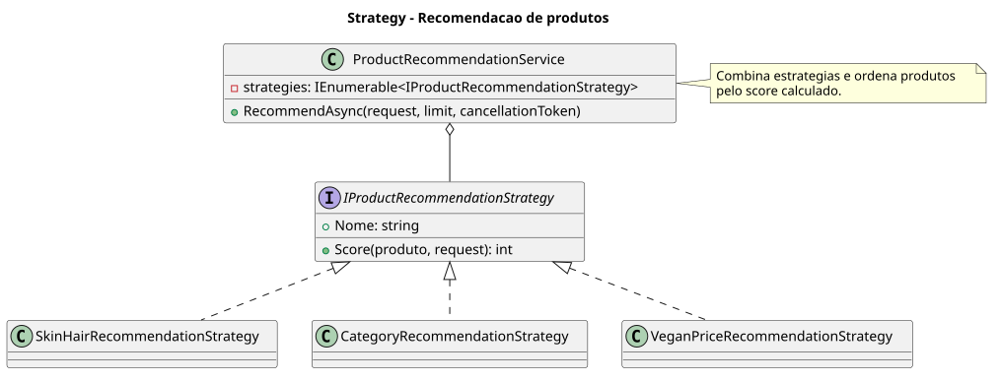
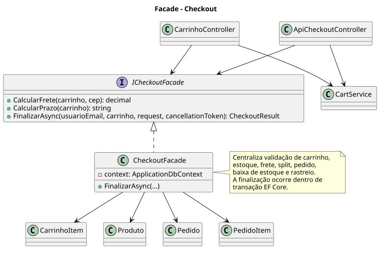
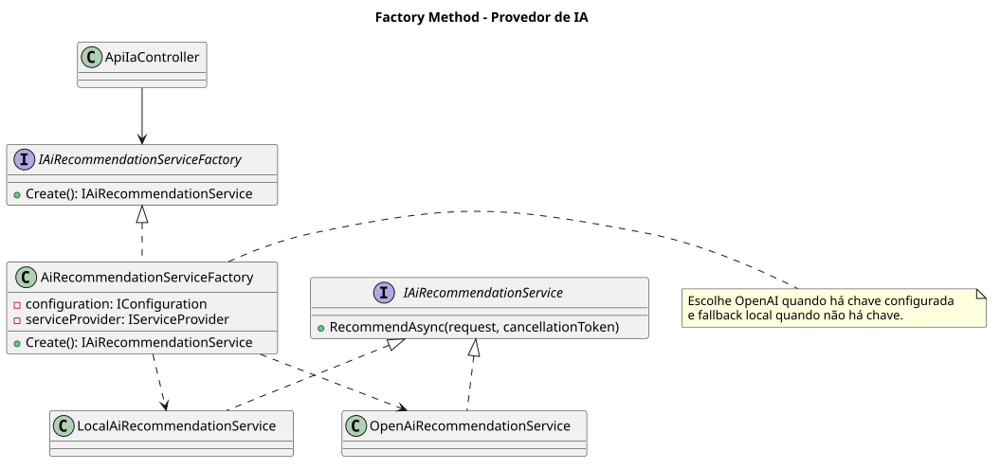

Beauty Marketplace - Entrega 4 - Padrões, APIs e IA
Objetivo
Apresentar os padrões de projeto aplicados no Beauty Marketplace, a documentação das APIs do sistema e a prova de conceito de Inteligência Artificial para recomendação personalizada de produtos de beleza.
2. Padrões de projeto GoF
Strategy - Recomendação de produtos
Categoria: Comportamental. O padrão separa os critérios de recomendação por perfil de pele, cabelo, categoria, preferência vegana e preço.

public interface IProductRecommendationStrategy
{
string Nome { get; }
int Score(Produto produto, ProductRecommendationRequest request);
}
Facade - Checkout
Categoria: Estrutural. O padrão centraliza validação de carrinho, estoque, frete, split, pedido e baixa de estoque.

public interface ICheckoutFacade
{
decimal CalcularFrete(IReadOnlyCollection<CarrinhoItem> carrinho, string? cep);
string CalcularPrazo(IReadOnlyCollection<CarrinhoItem> carrinho);
Task<CheckoutResult> FinalizarAsync(string usuarioEmail, IReadOnlyCollection<CarrinhoItem> carrinho, CheckoutRequest request, CancellationToken ct);
}
Factory Method - Provedor de IA
Categoria: Criacional. O padrão escolhe OpenAI quando há chave configurada e fallback local quando não há credencial externa.

public IAiRecommendationService Create()
{
var apiKey = _configuration["OpenAI:ApiKey"] ?? Environment.GetEnvironmentVariable("OPENAI_API_KEY");
return string.IsNullOrWhiteSpace(apiKey)
? _serviceProvider.GetRequiredService<LocalAiRecommendationService>()
: _serviceProvider.GetRequiredService<OpenAiRecommendationService>();
}
3. Documentação de APIs
Swagger UI local: http://localhost:5016/swagger. OpenAPI JSON: api/openapi.json. Postman Collection: api/postman_collection.json.
O Swagger/OpenAPI final documenta somente endpoints cujo caminho começa com /api. As rotas MVC internas da interface web foram removidas da documentação oficial.
Os endpoints de carrinho, checkout e pedidos usam autenticação por cookie do ASP.NET Identity e exigem usuário com role Consumidor. Sem login retornam 401 Unauthorized; com perfil sem permissão retornam 403 Forbidden.
| Endpoint | Método | Descrição | Status |
|---|---|---|---|
| /api/produtos | GET | Lista produtos com filtros. | 200 |
| /api/produtos/{id} | GET | Detalhes de produto. | 200, 404 |
| /api/produtos/{id}/avaliacoes | GET | Avaliações do produto. | 200 |
| /api/produtos/{id}/recomendacoes | GET | Recomendações relacionadas. | 200, 404 |
| /api/carrinho | GET | Carrinho do consumidor. | 200, 401 |
| /api/carrinho/itens | POST | Adiciona item. | 200, 400, 404 |
| /api/carrinho/itens/{produtoId} | PUT | Atualiza item. | 200, 404 |
| /api/carrinho/itens/{produtoId} | DELETE | Remove item. | 200 |
| /api/checkout | POST | Finaliza compra. | 201, 400, 401 |
| /api/pedidos | GET | Lista pedidos. | 200, 401 |
| /api/pedidos/{id} | GET | Detalhes e rastreio. | 200, 404 |
| /api/ia/recomendacoes | POST | PoC de IA. | 200, 400 |
Total documentado: 12 operações /api, acima do mínimo de 10 endpoints solicitado.
{
"tipoPele": "Oleosa",
"tipoCabelo": "Cacheado",
"objetivo": "hidratar",
"vegano": true,
"precoMax": 120
}
4. Inteligência Artificial na aplicação
A IA será usada como recomendador personalizado. A ferramenta escolhida é a OpenAI Responses API, com fallback local para apresentações sem chave externa. Referências: https://platform.openai.com/docs, https://platform.openai.com/docs/api-reference/responses e https://platform.openai.com/docs/guides/structured-outputs.
A PoC está implementada em POST /api/ia/recomendacoes e retorna provedor usado, resumo, alerta de compatibilidade e produtos recomendados.
Além do endpoint JSON, o perfil consumidor possui a tela Consumidor > Recomendação IA, permitindo demonstrar a PoC no próprio site sem depender do Postman.
5. Checkpoint 2 - Estado atual do projeto
| Concluído | Em andamento |
|---|---|
| Marketplace com perfis, catálogo, carrinho multi-lojista, checkout, pedidos, lista de desejos, dashboard, admin, Entrega 3, APIs, PoC de IA com tela para consumidor e testes automatizados. | Integração real de pagamento, frete, e-mail e IA externa. |
GitHub: https://github.com/EduardoSilvaNegreiros/TrabalhoFaculdade5Semestre2026
Kanban: https://github.com/users/EduardoSilvaNegreiros/projects/2
Nome do Kanban: Kanban - Projeto 5 Semestre ADS
Validação técnica executada
dotnet restore: restauração concluída.dotnet build --no-restore: compilação concluída com 0 erros e 0 warnings.dotnet test --no-build: 3 testes aprovados.dotnet list package --vulnerable --include-transitive: conferido sem vulnerabilidades conhecidas.
Conferência de commits
Conferência realizada em 31/05/2026. O repositório público e o Kanban foram conferidos. O histórico local visível mostra commits associados a:
Eduardo <edunegreiross@gmail.com>Eduardo Silva de Negreiros <edunegreiross@gmail.com>
Observação: caso o professor exija evidência individual de todos os integrantes, os demais membros devem realizar commits no repositório ou serem incluídos como coautores nos commits.
Critérios de avaliação
| Critério | Atendimento |
|---|---|
| Padrões GoF | Strategy, Facade e Factory Method aplicados e documentados. |
| APIs | Swagger/OpenAPI e Postman com 12 operações /api, métodos HTTP, parâmetros, exemplos e status codes. |
| IA | PoC de recomendação com OpenAI planejado e fallback local funcional. |
| Checkpoint 2 | Estado atual, pendências, GitHub, Kanban e commits conferidos. |